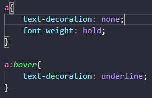

Resposta:
Para cumprir com essa exigência, basta apenas definir no CSS o seguinte código:

Aqui, a tag "a", que representa o link, recebeu um texto sem decoração,
mas quando é aplicado um hover a ela, o código css definiu que seu estilo
recebe um efeito sublinhado. Veja: